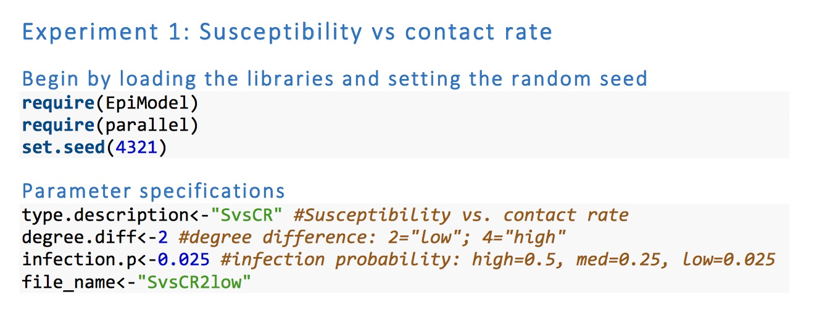
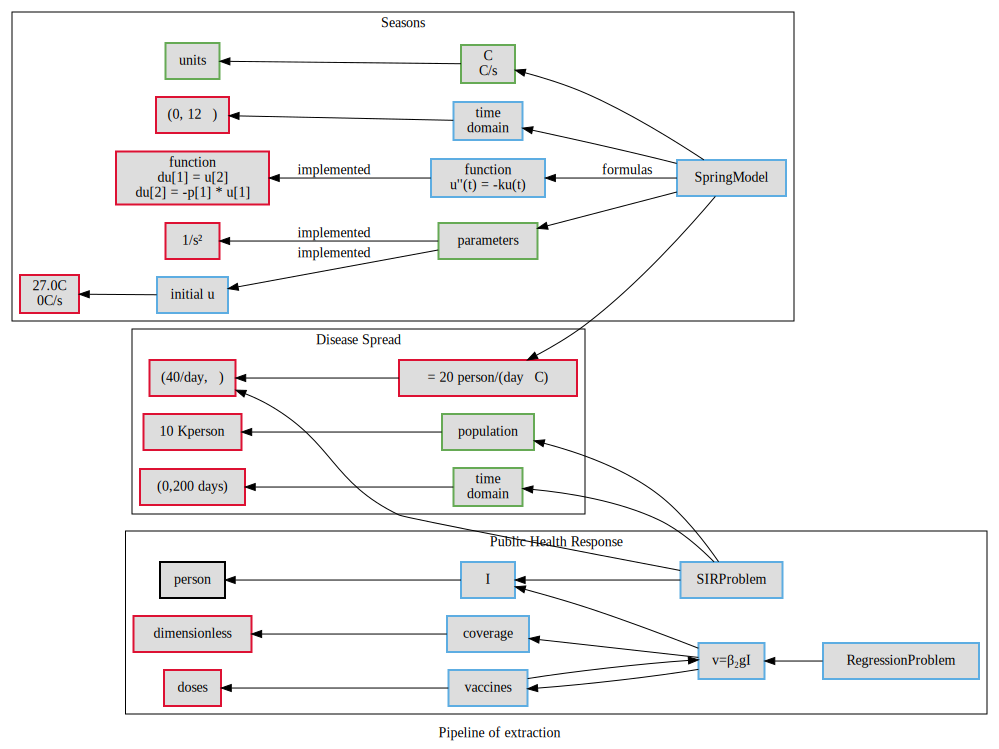

Approaches
Architecture, Approaches, and Techniques
We provide a high-level overview of the open-source epidemiological modeling software packages that we have reviewed, and outlines our intended approach for extracting information from scientific papers that cite one or more of these packages. Our extraction efforts are directed toward the construction of a knowledge graph that we can traverse to reason about how to best map a set of known, unitful inputs to a set of unknown, unitful outputs via parameter modification, hyperparamter modification, and/or sequential chaining of models present in the knowledge graph. Our overarching purpose in this work is to reduce the cost of conducting incremental scientific research, and facilitate communication and knowledge integration across different research domains.
Introduction
The ASKE program aims to extract knowledge from the body of scientific work. Our view is that the best way to prove that you have extracted knowledge is to show that you can build new models out of the components of old models. The purpose of these new models may be to improve the fidelity of the original model with respect to the phenomenon of interest or to probe the mechanistic relationships between phenomena. Another use case for adapting models to new contexts is in order to use a simulation to provide data that cannot be obtained through experimentation or observation.
Our initial scientific modeling domain is the epidemiological study of disease spread, commonly called compartmental or SIR models. These models are compelling because the literature demonstrates the use of a repetitive model structure with many variations. The math represented therein spans both discrete and continuous equations, and the algorithms that solve these models are diverse. Additionally, this general model may apply to various national defense related phenomena, such as viruses on computer networks [@cohenefficient2003] or misinformation in online media [@budaklimiting2011].
The long term goal for our project is to reduce the labor cost of integrating models between scientists so that researchers can more efficiently build on the research of others. Such an effort is usefully informed by prior work and practices within the areas of software engineering and open source software development. Having the source code for a library or package is essential to building on it, but perhaps even more important are the affordances provided by open source licensing models and (social) software distribution systems that can significantly reduce the effort required to download others' code and streamline execution from hours to minutes. This low barrier to entry is responsible for the proliferation of open source software that we see today. By extracting knowledge from scientific software and representing that knowledge, including model semantics, in knowledge graphs, along with leveraging type systems to conduct program analysis, we aim to increase the interoperability and development of scientific models at large scale.
Scientific Domain and Relevant Papers
We have focused our initial knowledge artifact gathering efforts on the scientific domain of epidemiology broadly defined, so as to render the diffusion of both disease and information in scope. Given that our ultimate goal is to automate the extraction of calls to epidemiological modeling libraries and functions, as well as the unitful parameters contained therein, we have conducted a preliminary literature review for the purpose of: (1) identifying a subset of papers published in this domain that leverage open-source epidemiological modeling libraries, and/or agent-based simulation packages, and make their code available to other researchers; and (2) identifying causally dependent research questions that could benefit from, and/or be addressed by the modification and/or chaining of individual models, as these questions can serve as foundational test cases for the meta-models we develop.
Papers and Libraries
We began the literature review and corpus construction process by identifying a representative set of open-source software (OSS) frameworks for epidemiological modeling, and/or agent-based simulation, including: NDLib, EMOD, Pathogen, NetLogo, EpiModels, and FRED. These frameworks were selected for initial consideration based on: (1) the scientific domains and/or research questions they are intended to support (specifically, disease transmission and information diffusion); (2) the programming language(s) in which they are implemented (Julia, Python, R, C++); and (3) the extent to which they have been used in peer-reviewed publications that include links to their source code. We provide a brief overview of the main components of each package below, as well as commentary on the frequency with which each package has been used in relevant published works.
NDLib
NDLib is an open-source package developed by a research team from the Knowledge Discovery and Data Mining Laboratory (KDD-lab) at the University of Pisa, and written in Python on top of the NetworkX library. NDLib is intended to aid social scientists, computer scientists, and biologists in modeling/simulating the dynamics of diffusion processes in social, biological, and infrastructure networks [@NDlib1; @NetworkX]. NDLib includes built-in implementations of many common epidemiological models (e.g., SIR, SEIR, SEIS, etc.), as well as models of opinion dynamics (e.g., Voter, Q-Voter, Majority Rule, etc.). In addition, there are several features intended to make NDLib available to non-developer domain experts, including an abstract Network Diffusion Query Language (NDQL), an experiment server that is query-able through a RESTful API to allow for remote execution, and a web-based GUI that can be used to visualize and run epidemic simulations [@NDlib1].
The primary disadvantage of NDLib is that it is relatively new: the associated repository on GitHub was created in 2016, with the majority of commits beginning in 2017; two supporting software system architecture papers were published in 2017-2018 [@ndlibDocs; @NDlib1; @NDlib2]. As such, while there are several factors which bode well for future adoption (popularity of Python for data science workflows and computer science education; user-friendliness of the package, particularly for users already familiar with NetworkX, etc.), the majority of published works citing NDLib are papers written by the package authors themselves, and focus on information diffusion.
Epimodels
EpiModel is an R package, written by researchers at Emory University and The University of Washington, that provides tools for simulating and analyzing mathematical models of infectious disease dynamics. Supported epidemic model classes include deterministic compartmental models, stochastic individual contact models, and stochastic network models. Disease types include SI, SIR, and SIS epidemics with and without demography, with utilities available for expansion to construct and simulate epidemic models of arbitrary complexity. The network model class is based on the statistical framework of temporal exponential random graph models (ERGMs) implementated in the Statnet suite of software for R. [@JSSv084i08] The library is widely used and the source code is available. The library would make a great addition to the system we are building upon integration. EpiModels has received several grants from the National Institutes of Health (NIH) for funding its development. There are several publications utilizing the library at highly elite research journals, including PLoS ONE and Infectious Diseases, as well as the Journal of Statistical Software.
NetLogo
NetLogo, according to the User Manual, is a programmable modeling environment for simulating natural and social phenomena. It was authored by Uri Wilensky in 1999 and has been in continuous development ever since at the Center for Connected Learning and Computer-Based Modeling. NetLogo is particularly well suited for modeling complex systems developing over time. Modelers can give instructions to hundreds or thousands of "agents" all operating independently. This makes it possible to explore the connection between the micro-level behavior of individuals and the macro-level patterns that emerge from their interaction. NetLogo lets students open simulations and "play" with them, exploring their behavior under various conditions. It is also an authoring environment which enables students, teachers and curriculum developers to create their own models. NetLogo is simple enough for students and teachers, yet advanced enough to serve as a powerful tool for researchers in many fields. NetLogo has extensive documentation and tutorials. It also comes with the Models Library, a large collection of pre-written simulations that can be used and modified. These simulations address content areas in the natural and social sciences including biology and medicine, physics and chemistry, mathematics and computer science, and economics and social psychology. Several model-based inquiry curricula using NetLogo are available and more are under development. NetLogo is the next generation of the series of multi-agent modeling languages including StarLogo and StarLogoT. NetLogo runs on the Java Virtual Machine, so it works on all major platforms (Mac, Windows, Linux, et al). It is run as a desktop application. Command line operation is also supported. [@tisue2004netlogo; @nlweb] NetLogo has been widely used by the simulation research community at-large for well over nearly two decades. Although there is a rich literature that mentions its use, it may be more difficult to identify scripts that have been authored and that pair with published research papers using the modeling library due to the amount of time that has passed and that researcher may no longer monitor the email addresses listed on their publications for various reasons.
EMOD
Epidemiological MODeling (EMOD) is an open-source agent-based modeling software package developed by the Institute for Disease Modeling (IDM), and written in C++ [@emodRepo; @emodDocs]. The primary use case that EMOD is intended to support is the stochastic agent-based modeling of disease transmission over space and time. EMOD has built-in support for modeling malaria, HIV, tuberculosis, sexually transmitted infections (STIs), and vector-borne diseases; in addition, a generic modeling class is provided, which can be inherited from and/or modified to support the modeling of diseases that are not explicitly supported [@emodDocs; @emodRepo].
The documentation provided is thorough, and the associated GitHub repo has commits starting in July 2015; the most recent commit was made in July 2018 [@emodRepo; @emodDocs]. EMOD also includes a regression test suite, so that stochastic simulation results can be compared to a reference set of results and assessed for statistical similarity within an acceptable range. In addition, EMOD leverages Message Passing Interface (MPI) to support within- and among-simulation(s)-level parallelization, and outputs results as JSON blobs. The IDM conducts research, and as such, there are a relatively large number of publications associated with the institute that leverage EMOD and make their data and code accessible. One potential drawback of EMOD relative to more generic agent-based modeling packages is that domain-wise, coverage is heavily slanted toward epidemiological models; built-in support for information diffusion models is not included.
Pathogen
Pathogen is an open-source epidemiological modeling package written in Julia [@pathogenRepo]. Pathogen is intended to allow researchers to model the spread of infectious disease using stochastic, individual-level simulations, and perform Bayesian inference with respect to transmission pathways [@pathogenRepo]. Pathogen includes built-in support for SEIR, SEI, SIR, and SI models, and also includes example Jupyter notebooks and methods to visualize simulation results (e.g., disease spread over a graph-based network, where vertices represent individual agents). With respect to the maturity of the package, the first commit to an alpha version of Pathogen occurred in 2015, and the master branch contains commits within the last month (e.g., November 2018) [@pathogenRepo]. Pathogen is appealing because it could be integrated into our Julia-based meta-modeling approach without incurring the overhead associated with wrapping non-Julia-based packages. However, one of the potential disadvantages of the Pathogen package is that there is no associated software or system architecture paper; as such, it is difficult to locate papers that use this package.
FRED
FRED, which stands for a Framework for Reconstructing Epidemic Dynamics, is an open-source, agent-based modeling software package written in C++, developed by the Pitt Public Health Dynamics Laboratory for the purpose of modeling the spread of disease(s) and assessing the impact of public health intervention(s) (e.g., vaccination programs, school closures, etc.) [@pittir24611; @fredRepo]. FRED is notable for its use of synthetic populations that are based on U.S. Census Data, and as such, allow for the instantiation of agents whose spatiotemporal and sociodemographic characteristics, including household membership and location, as well as income level and patterns of employment and/or school attendance, reflect the actual distribution of the population in the selected geographic area(s) within the United States [@pittir24611]. FRED is modular and paramterized to allow for support of different diseases, and the associated software paper, as well as the GitHub repository, provide clear, robust documentation for use. One advantage of FRED relative to some of the other packages we have reviewed is that it is relatively mature. Commits range from 2014-2016, and the associated software paper was published in 2013; as such, epidemiology researchers have had more time to become familiar with the software and cite it in their works [@pittir24611; @fredRepo]. A related potential disadvantage is that FRED does not appear to be under active development [@pittir24611; @fredRepo].
Evaluation
The packages outlined in the preceding section are all open-source, and written in Turing-complete programming languages; thus, we believe any subset of them would satisfy the open-source and complexity requirements for artifact selection outlined in the solicitation. As such, the primary dimensions along which we have evaluated and compared our initial set of packages include: (1) the frequency with which a given package has been cited in published papers that include links or references to their code; (2) the potential trend of increasing adoption/citation over the near-to-medium term; (3) the existence of thorough documentation; and (4) the feasibility of cross-platform and/or cross-domain integration.
With respect to the selection of specific papers and associated knowledge artifacts, our intent at this point in the knowledge discovery process is to prioritize the packages outlined above based on their relative maturity, and proceed to conduct additional, augmenting bibliometric exploration in the months ahead. Our view is that EMOD, Epimodels, NetLogo, and FRED can be considered established packages, given their relative maturity and the relative availability of published papers citing these packages. Pathogen and NDLib can be considered newer packages, in that they are relatively new and lack citations, but have several positive features that bode well for an uptick in use and associated citation in the near- to medium-term. It is worth noting that while the established packages provide a larger corpus of work from which to select a set of knowledge artifacts, the newer packages are more modern, and as such, we expect them to be easier to integrate into the type of data science/meta-modeling pipelines we will develop. Additionally, we note that should the absence of published works prove to be an obstacle for a package we ultimately decide to support via integration into our framework, we are able to generate feasible examples by writing them ourselves.
For purposes of development and testing, we will need to use simple or contrived models that are presented in a homogeneous framework. Pedagogical textbooks [@voitfirst2012] and lecture notes[1] will be a resource for these simple models that are well characterized.
Information Extraction
In order to construct the knowledge graph that we will traverse to generate metamodel directed acyclic graphs (DAGs), we will begin by defining a set of knowledge artifacts and implementing (in both code and process/system design) an iterative, expert-in-the-loop knowledge extraction pipeline. The term "knowledge artifacts" is intended to refer to the set of open-source software packages (e.g., their code-bases), as well as a curated subset of published papers in the scientific domains of epidemiology and/or information diffusion that cite one or more of these packages and make their own code and/or data (if relevant) freely available. Our approach to the selection of packages and papers has been outlined in the preceding section, and is understood to be both iterative and flexible to the incorporation of additional criteria/constraints, and/or the inclusion/exclusion of (additional) works as the knowledge discovery process proceeds.
Given a set of knowledge artifacts, we plan to proceed with information extraction as follows: First, we will leverage an expert system's based approach to derive rules to automatically recognize and extract relevant phenomena; see Table [table:info_extract]{reference-type="ref" reference="table:info_extract"} for details. The rules will be built using the outputs of language parsers and applied to specific areas of source code that meet other heuristic criteria e.g. length, association with other other functions/methods. Next, we will also experiment with supervised approaches (mentioned in our proposal) and utilize information from static code analysis tools, programming language parsers, and lexical and orthographic features of the source code and documentation. For example, variables that are calculated as a result of running a for loop within code and whose characters, lexically speaking, occur within source code documentation and or associated research publications are likely related to specific models being proposed or extended in publications.
We will also be performing natural language parsing [@manning] on research papers themselves to provide cues for how we perform information extraction on associated scripts with references to known libraries. For example, a research paper will reference a library that our system is able to reason about and extend models from and so if no known library is identified then the system will not attempt to engage in further pipeline steps. For example, a paper that leverages the EpiModels library will contain references to the EpiModels library itself and in one set of cases, reference a particular family of models e.g. "Stochastic Individual Contact Models". The paper will likely not mention any references to actual library functions/methods that were used but will reference particular circumstances related to using a particular model such as e.g. model parameters that were the focus of the research paper's investigation. These kinds of information will be used in supervised learning to build the case for different kinds of extractions. In order to do supervised learning, we will be developing ground truth annotations to train models with. To gain a better sense of the kinds of knowledge artifacts we will be working with, below we present an example paper that a metamodel can be built from and from whence information can be extracted to help in the creation of that metamodel.
EpiModels Example
In [@doi:10.1111/oik.04527] the authors utilize the EpiModels library and provide scripts for running the experiments they describe. We believe this is an example of the kind of material we will be able to perform useful information extractions on to inform the development of metamodels. Figure [fig:img/covar_paper1]{reference-type="ref" reference="fig:covar_paper1"} is an example of script code from [@doi:10.1111/oik.04527]:
{width="70%"}
[[fig:covar_paper1]]{#fig:covarpaper1 label="fig:covarpaper1"}
Table [table:info_extract]{reference-type="ref" reference="table:info_extract"} is a non-exhaustive list of the kinds of information extractions we are currently planning and the purposes they serve in supporting later steps:
Extraction Type Description Sources ––––––––– –––––––––––––––––––––––––––––––––––––––––- ––––––––- Code References Creation and selection of metamodels to extend or utilize depending on user goals Papers, Scripts Model Parameters Natural language variable names, function parameters Papers, Scripts Function Names Names of library model functions used to run experiments in papers Scripts Library Names Include statements to use specific libraries. Identification of libraries Scripts
: Planned information extractions. A non-exhaustive list of information extractions, their purposes, and sources.
[[table:info_extract]]{#table:infoextract label="table:infoextract"}
The information extractions we produce here will be included as annotations in the knowledge representations we describe next.
Knowledge Representation
On the topic of dimensionality / complexity reduction (in an entropic sense) and knowledge representation: (1) we will begin by passing the code associated with each knowledge artifact through static analysis tools. Static analysis tools include linters intended to help programmers debug their code and correct syntax, stylistic, and/or security-related errors. As the knowledge artifacts in our set are derived from already published works, we do not anticipate syntax errors. Rather, our objective is to use the abstract syntax trees (ASTs), call graphs, control flow graphs, and/or dependency graphs that are produced during static analysis to extract both discrete model instantiation(s) (along with arguments, which can be mapped back to parameters which may have associated metadata, including required object type and units), as well as sequential function call information.
The former can be thought of as contributing a connected subgraph to the knowledge graph, such that $G_i \subseteq G$, in which model classes and variable data/unit types are represented as vertices and connected by directed "requires/accepts" edges. The latter can be thought of as contributing information about the mathematical and/or domain-specific legality and/or frequency with which a given subset of model types can be sequentially linked; this information can be used to weight edges connecting model nodes in the knowledge graph.
The knowledge graph approach will help identify relevant pieces of context. For example the domain of a scientific paper or code will be necessary for correct resolution of scientific terms which are used to refer to multiple phenomena in different contexts. For example, in a paper about biological cell signalling pathways the term "death" is likely to refer to the death of individual cells, while in a paper about disease prevalence in at-risk populations, the same term is likely referring to the death of individual people. This will be further complicated by figurative language in the expository aspects of paper where "death" might be used as a metaphor when a cultural behavior or meme "dies out" because people stop spreading the behavior to their social contacts.
Schema Design
We will represent the information extracted from the artifacts using a knowledge graph. And while knowledge graphs are very flexible in how they represent data, it helps to have a schema describing the vertex and edge types along with the metadata that will be stored on the vertices and edges.
In our initial approach, the number of libraries that models can be implemented with will be small enough that schema design can be done by hand. We expect that this schema will evolve as features are added to the system, but remain mostly stable as new libraries, models, papers, and artifacts are added.
When a new paper/code comes in, we will extract edges and vertices automatically with code which represents those edges and vertices in the predefined schema.
Many of the connections will be from artifacts to their components, which will connect to concepts. When papers are connected to other papers, they are connected indirectly (e.g., via other vertices), except for edges that represent citations directly between papers.
![An example of the knowledge graph illustrating the nature of the schema.[]{label="fig:schema."}](../img/schema.dot.svg)
It is an open question for this research whether the knowledge graph should contain models with the parameters bound to values, or the general concept of a model with parameters available for instantiation. Our initial approach will be to model both the general concept of a model such as HookesLawModel along with the specific instantiation HookesLawModel{k=5.3} from specific artifacts.
Data Sets in the Knowledge Graph
A big component of how papers refer to the same physical phenomenon is that they use the same data sets. These common datasets which become benchmarks that are leveraged widely in the research community are highly concentrated in a small number of widely cited papers. This is good for our task because we know that if two papers use the same dataset then they are talking about the same phenomenon.
The most direct overlap of datasets is to go through papers that provide the canonical source for that dataset. But we can also think of similarity of datasets in terms of the schema(s) of the datasets. This requires a more detailed dataset representation than just the column names commonly found on CSV files. Google's open dataset search has done a lot of the work necessary for annotating the semantics for features of datasets. The DataDeps.jl system includes programmatic ways to access this information for many of the common open science data access protocols[2] By linking dataset feature (column) names to knowledge graph concepts, we will be able to compare datasets for similarity and conceptual overlap. The fact that two models are connected to the same dataset(s) or concept(s) is an important indicator that the two models are compatible or interchangeable.
Schema.org
Schema.org is one of the largest and most diverse knowledge graph systems.
It includes virtually no coverage of scientific concepts. There are no schema.org nodes for Variable, Function, Equation. The most relevant schema.org concepts are given in the following list.
https://schema.org/Quantity which has more specific types
The focus of schema.org is driven by its adoption in the web document community. Schema.org concepts are used for tagging documents in order for search engines or automated information extraction systems to find structured information in documents. Often it is catalogue or indexing sites that use schema.org concepts to describe the items or documents in their collections.
The lack of coverage for scientific concepts is surprising given that we think of academic research on publication mining to be focused on their own fields, for example papers about mining bibliographic databases often use examples of database researchers themselves.
You could model the relationships between papers using this schema.org schema. But that takes place at the bibliometric level instead of the the model semantics level. There are no entries for expressing that these two papers solve the same equation. Or model the same physical phenomena. Of course schema.org is organized so that everything can be expressed as a https://schema.org/Thing, but there is no explicit representation for these concepts. There is a Schema.org schema for heath and life science https://health-lifesci.schema.org/. As we define the schema of our knowledge graph, we will link up with the schema.org concepts as much as possible and could add an extension to the schema.org in order to represent scientific concepts.
Model Representation and Execution
Representation of models occurs at four levels:
Executable: the level of machine or byte-code instructions
Lexical: the tradition code representation assignment, functions, and loops
Semantic: a declarative language or computation graph representation with nodes linked to the knowledge graph
Human: a description in natural language as in a research paper or textbook
The current method of scientific knowledge extraction is to take a Human level description and have a graduate student build a Lexical level description by reading papers and implementing new codes. We aim to introduce the Semantic level which is normally stored only in the brains of human scientists, but must be explicitly represented in machines in order to automate scientific knowledge extraction. A scientific model represented at the Semantic level will be easy to modify computationally and be describable for the automatic description generation component. The Semantic level representation of a model is a computation DAG. One possible description is to represent the DAG in a human-friendly way, such as in Figure [fig:flu]{reference-type="ref" reference="fig:flu"}.

Scientific Workflows (Pipelines)
Our approach will need to be differentiated from scientific workflow managers that are based on conditional evaluation tools like Make. Some examples include Make for scientists, Scipipe, and the Galaxy project. These scientific workflows focus on representing the relationships between intermediate data products without getting into the model semantics. While scientific workflow managers are a useful tool for organizing the work of a scientist, they do not have a particularly detailed representation of the modeling tasks. Workflow tools generally accept the UNIX wisdom that text is the universal interface and communicate between programs using files on disk or in memory pipes, sockets, or channels that contain lines of text.
Our approach will track a higher fidelity representation of the model semantics in order to enable computational reasoning over the viability of combined models. Ideas from static analysis of computer programs will enable better verification of metamodels before we run them.
Metamodels as Computation Graphs
Our position is that if you have a task currently solved with a general purpose programming language, you cannot replace that solution with anything less powerful than a general purpose programming language. The set of scientific modeling codes is just too diverse, with each part a custom solution, to be solved with a limited scope solution like a declarative model specification. Thus we embed our solution into the general purpose programming language Julia.
We use high level programming techniques such as abstract types and multiple dispatch in order to create a hierarchical structure to represent a model composed of sub-models. These hierarchies can lead to static or dynamic DAGs of models. Every system that relies on building an execution graph and then executing it finds the need for dynamically generated DAGs at some point. For sufficiently complicated systems, the designer does not know the set of nodes and dependencies until execution has started. Examples include recursive usage of the make build tool, which lead to techniques such as cmake, Luigi, and Airflow, and Deep Learning which has both static and dynamic computation graph implementations for example TensorFlow and PyTorch. There is a tradeoff between the static analysis that helps optimize and validate static representations and the ease of use of dynamic representations. We will explore this tradeoff as we implement the system.
For a thorough example how to use our library to build a metamodel see the notebook FluExample.ipynb. This example uses Julia types system to build a model DAG that represents all of the component models in a machine readable form. This DAG is represented in Figure [fig:flu]{reference-type="ref" reference="fig:flu"}. Code snippets and rendered plots appear in the notebook.
Metamodel Constraints
When assembling a metamodel, it is important to eliminate possible combinations of models that are scientifically or logically invalid. One type of constraint is provided by units and dimensional analysis. Our flu example pipeline uses Unitful.jl to represent the quantities in the models including $C,s,d,person$ for Celsius, second, day, and person. While $C,s,d$ are SI defined units that come with Unitful.jl, person is a user defined type that was created for this model. These unit constraints enable a dynamic analysis tool (the Julia runtime system) to invalidate combinations of models that fail to use unitful numbers correctly, i.e., in accordance with the rules of dimensional analysis taught in high school chemistry and physics. In order to make rigorous combinations of models, more information will need to be captured about the component models. It is necessary but not sufficient for a metamodel to be dimensionally consistent. We will investigate the additional constraints necessary to check metamodels for correctness.
Metamodel Transformations
Metamodel transformations describe high-level operations the system will perform based on the user's request and the information available to it in conjunction with using a particular set of open source libraries; examples of these are as follows:
utilize an existing metamodel and modifying parameters;
modifying the functional form in a model such as adding terms to an equation
changing the structure of the metamodel by modifying the structure of the computation graph
introducing new nodes to the model[3]
Types
This project leverages the Julia type system and code generation toolchain extensively.
Many Julia libraries define and abstract interface for representing the problems they can solve for example
DifferentialEquations.jl https://github.com/JuliaDiffEq/DiffEqBase.jl defines
DiscreteProblem,ODEProblem,SDEProblem,DAEProblemwhich represent different kinds of differential equation models that can be used to represent physical phenomena. Higher level concepts such as aMonteCarloProblemcan be composed of subproblems in order to represent more complex computations. For example aMonteCarloProblemcan be used to represent situations where the parameters or initial conditions of anODEProblemare random variables, and a scientist aims to interrogate the distribution of the solution to the ODE over that distribution of input.MathematicalSystems.jl https://juliareach.github.io/MathematicalSystems.jl/latest/lib/types.html defines an interface for dynamical systems and controls such as
LinearControlContinuousSystemandConstrainedPolynomialContinuousSystemwhich can be used to represent Dynamical Systems including hybrid systems which combine discrete and continuous phenomena. Hybrid systems are of particular interest to scientists examining complex phenomena at the interface of human designed systems and natural phenomena.Another library for dynamical systems includes https://juliadynamics.github.io/DynamicalSystems.jl/, which takes a timeseries and physics approach to dynamical systems as compared to the engineering and controls approach taken in MathematicalSystems.jl.
MADs http://madsjulia.github.io/Mads.jl/ offers a modeling framework that supports many of the model analysis and decision support tasks that will need to be performed on metamodels that we create.
Each of these libraries will need to be integrated into the system by understanding the types that are used to represent problems and developing constraints for how to create hierarchies of problems that fit together. We think that the number of libraries that the system understands will be small enough that the developers can do a small amount of work per library to integrate it into the system, but that the number of papers will be too large for manual tasks per paper.
When a new paper or code snippet is ingested by the system, we may need to generate new leaf types for that paper automatically.
By hooking into the Julia type system we are able to use multidispatch to reprogram existing functions. Our approach takes this to the next level by using Cassette.jl contexts and overdubbing to reprogram code to provide new functionality without changing the architecture of the existing software.
User Interface
Our system is used by expert scientists who want to reduce their time spent writing code and plumbing models together. As an input it would take a set of things known or measured by the scientist and a set of variables or quantities of interest that are unknown. The output of the program is a program that calculates the unknowns as a function of the known input(s) provided by the user, potentially with holes that require expert knowledge to fill in.
Generating new models
We will use metaprogramming to build a library that takes data structures, derived partially using information previously extracted from research publication and associated scripts, which represent models as input and transform and combine them into new models, then generates executable code based on the these new, potentially larger models.
One foreseeable technical risk is that the Julia compiler and type inference mechanism could be overwhelmed by the number of methods and types that our system defines. In a fully static language like C++ the number of types defined in a program is fixed at compile time and the compile burden is paid once for many executions of the program. In a fully dynamic language like Python, there is no compilation time and the cost of type checking is paid at run time. However, in Julia, there is both compile time analysis and run time type computations.
In Julia, changing the argument types to a function causes a round of LLVM compilation for the new method of that function. When using Unitful numbers in calculations, changes to the units of the numbers create new types and thus additional compile time overhead. This overhead is necessary to provide unitful numbers that are no slower for calculations than primitive number types provided by the processor. As we push more information into the type system, this trade-off of additional compiler overhead will need to be managed.
Validation
There are many steps to this process and at each step there is a different process for validating the system.
Extraction of knowledge elements from artifacts: we will need to assess the accuracy of knowledge elements extracted from text, code and documentation to ensure that the knowledge graph is correct. This will require some manual annotation of data from artifacts and quality measures such as precision and recall. The precision is the number of edges in the knowledge graph that are correct, and the recall is the fraction of correct edges that were recovered by the information extraction approach.
Metamodel construction: once we have a knowledge graph, we will need to ensure that combinations of metamodels are valid, and optimal. We will aim to produce the simpliest metamodel that relates the queried concepts this will be measured in terms of number of metamodel nodes, number of metamodel dependency onnections, number of adjustment or transformation functions. We will design test cases that increase in complexity from pipelines with no need to transform variables, to pipelines with variable transformations, to directed acyclic graphs (DAGs).
Model Accuracy: as the metamodels are combinations of models that are imperfect, there will be compounding error within the metamodel. We will need to validate that our metamodel execution engine does not add error unnecessarily. This will involve numerical accuracy related to finite precision arithmetic, as well as statistical accuracy related to the ability to learn parameters from data. Additionally, since we are by necessity doing some amount of domain adaptation when reusing models, we will need to quantify the domain adaptation error generated by applying a model developed for one context in a different context. These components of errors can be thought of as compounding loss in a signal processing system where each component of the design introduces loss with a different response to the input.
Our view is to analogize the metamodel construction error and the model accuracy to the error and residual in numerical solvers. For a given root finding problem, such as $f(x)=0$ solve for $x$ the most common way to measure the quality of the solution is to measure both the error and the residual. The error is defined as $\mid x-x^\star\mid$, which is the difference from the correct solution in the domain of $x$ and the residual is $\mid f(x) - f(x^\star)\mid$ or the difference from the correct solution in the codomain. We will frame our validation in terms of error and residual, where the error is how close did we get to the best metamodel, and residual is the difference between the observed versus predicted phenomena.
These techniques need to generate simple, explainable models for physical phenomena that are easy for scientists to generate, probe, and understand, while being the best possible model of the phenomena under investigation.
Next Steps
Our intended path forward following the review of this report is as follows:
Incorporation of feedback received from DARPA PM, including information related to: the types of papers we consider to be in scope (e.g., those with and without source code); domain coverage and desired extensibility; expressed preference for inclusion/exclusion of particular package(s) and/or knowledge artifact(s).
Construction of a proof-of-concept version of our knowledge graph and end-to-end pipeline, in which we begin with a motivating example and supporting documents (e.g., natural language descriptions of the research questions and mathematical relationships modeled; source code), show how these documents can be used to construct a knowledge graph, and show how traversal of this knowledge graph can approximately reproduce a hand-written Julia meta-modeling pipeline. The flu example outlined above is our intended motivating example, although we are open to tailoring this motivating example to domain(s) and/or research questions that are of interest to DARPA.
A feature of the system not yet explored is automatic transformation of models at the Semantic Level. These transformations will be developed in accordance with interface expectations from downstream consumers including the TA2 performers.
Executing on this proof-of-concept deliverable will allow us to experience the iterative development and research life-cycle that end-users of our system will ultimately participate in. We anticipate that this process will help us to identify gaps in our knowledge and framing of the problem at hand, and/or shortcomings in our methodological approach that we can enhance through the inclusion of curated domain-expert knowledge (e.g., to supplement the lexical nodes and edges we are able to extract from source code). In addition, we expect the differences between our hand-produced meta-model and our system-produced meta-model to be informative and interpretable as feedback which can help us to improve the system architecture and associated user experience. It's also worth noting that over the medium term, we anticipate that holes in the knowledge graph (e.g., missing vertices and/or edges; missing conversion steps to go from one unit of analysis to another, etc.) may help us to highlight areas where either additional research, and/or expert human input is needed.
new model nodes must first be ingested into the system in order to be made available to users.